Themis – Chương trình chấm bài tự động
Phần mềm chấm bài tự động là công cụ hỗ trợ quan trọng của ban giám khảo các kỳ thi lập trình. Ưu điểm chính của việc sử dụng phần mềm chấm bài tự động so với cách chấm truyền thống là:
- Tự động hóa các thao tác cho điểm, tránh sự nhầm lẫn khi lên điểm và xếp hạng
- Quá trình cho điểm được thực hiện hoàn toàn khách quan trên các bộ test được xây dựng từ trước, không bị ảnh hưởng bởi ý kiến chủ quan hay tâm lý người chấm.
- Việc in ấn các bảng biểu, lấy ra các số liệu thống kê được thực hiện hoàn toàn tự động và chính xác. Những số liệu thống kê đó có thể tích hợp vào các phần mềm khác để làm báo cáo và rút kinh nghiệm cho các kỳ thi sau.
- Sau khi kỳ thi kết thúc, dữ liệu cho kỳ thi có thể công bố và các thí sinh khác có thể luyện tập trên các bài thi, sau đó dùng chương trình chấm tự động để tự đánh giá thay vì phải mời một ban giám khảo để chấm lại. Việc này sẽ giúp ích cho phong trào học tập tin học, đặc biệt ở các địa phương vùng sâu vùng xa không có điều kiện tiếp cận nhiều với các chuyên gia cũng như các kỳ thi chính thức.
Themis là phần mềm chấm bài tự động được phát triển theo yêu cầu của Cục Khảo thí và Kiểm định chất lượng giáo dục, Bộ Giáo dục và Đào tạo. Sản phẩm được thiết kế phục vụ kỳ thi học sinh giỏi Quốc gia hàng năm, nhưng hoàn toàn có thể sử dụng trong tất cả các kỳ thi và bài kiểm tra tin học dùng cơ chế chấm điểm tự động bằng bộ test
Yêu cầu cấu hình phần mềm và phần cứng: Microsoft Windows XP, Vista, Seven hoặc mới hơn. Microsoft Office Excel (Từ phiên bản Office 2000 trở lên) nếu cần kết xuất báo cáo ra Excel. Mọi cấu hình phần cứng đủ cài đặt các phần mềm trên đều có thể chạy Themis.
Cách đơn giản nhất để cài đặt Themis là sử dụng bộ cài đặt, tuy nhiên cũng có thể copy vào máy và chạy bình thường. Themis được viết và dịch ra mã máy tự nhiên, chỉ một file Themis.exe chạy trực tiếp trên hệ điều hành mà không cần sử dụng bất kỳ framework hay virtual machine nào cả. Hai thư mục Judgers và Documentation cần copy vào cùng với file Themis.exe để cung cấp các bộ chấm và tài liệu hướng dẫn sử dụng.
Hai điều cần chú ý khi chạy Themis:
- Trong trường hợp Themis không được cài đặt mà được copy về chạy trên Windows XP, cần khởi động Themis ở quyền quản trị (administrators) một lần rồi có thể thoát ngay, sau đó muốn chạy Themis ở quyền người dùng nào cũng được. Nếu sử dụng bộ cài đặt hoặc chạy trên hệ điều hành Windows Vista, Seven hoặc mới hơn thì không cần quan tâm vấn đề này.
- Themis cần chạy trong quyền người dùng hiện tại, không được khởi động Themis bằng chức năng “Run as…” để chạy trong quyền người dùng khác
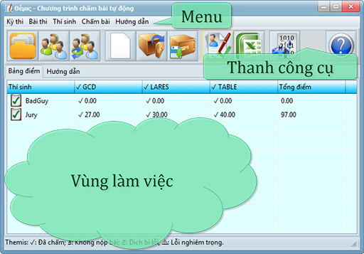
Giao diện chính của phần mềm gồm có hệ thống menu, thanh công cụ và vùng làm việc. Vùng làm việc có 2 tab: “Bảng điểm” và “Hướng dẫn”. Tab “Bảng điểm” hiển thị danh sách bài thi, danh sách thí sinh và kết quả chấm dưới dạng bảng. Tab “Hướng dẫn” là tài liệu hướng dẫn sử dụng, có thể đọc trực tiếp như văn bản này hoặc tra cứu nhanh từ các nút “Hướng dẫn” đối với các chức năng cụ thể.
Một kỳ thi cần được chuẩn bị trong hai thư mục: Thư mục chứa các bài thi (tạm gọi là thư mục Tasks) và thư mục chứa các bài làm (tạm gọi là thư mục Contestants).
- Thư mục chứa các bài thi gồm nhiều thư mục con, mỗi thư mục con chứa thông tin về một bài thi với tên thư mục là tên bài thi. Có bao nhiêu bài thi thì có bấy nhiêu thư mục con.
Mỗi bài thi có thể có nhiều test, mỗi test lại phải đặt trong một thư mục con của thư mục bài thi tương ứng. Bài thi có bao nhiêu test thì thư mục bài thi đó chứa bấy nhiêu thư mục con.
Trong thư mục của mỗi test, cần chuẩn bị các file dữ liệu của test (các files này sẽ được copy vào nơi có bài làm của thí sinh để cung cấp dữ liệu khi chạy bài làm của thí sinh). Ngoài ra cần cung cấp các files kết quả hoặc các files phụ trợ khác dành cho bộ chấm nếu cần thiết.
- Thư mục chứa các bài làm gồm nhiều thư mục con, mỗi thư mục con có tên là tên một thí sinh và chứa toàn bộ bài làm của thí sinh tương ứng. Bài làm của thí sinh ứng với mỗi bài thi cần đặt trong file có tên là «Tên bài thi».*, ở đây * là phần mở rộng do ngôn ngữ và công cụ lập trình quy định. Nếu bài làm của thí sinh khi dịch cần thêm các files/thư mục phụ trợ ngoài file nguồn do kỳ thi yêu cầu thì file nguồn và các files/thư mục phụ trợ cần nén vào một file duy nhất: «Tên bài thi».zip.
|
Ví dụ về thư mục chứa bài thi
|
Ví dụ về thư mục chứa bài làm
|
|
|
- Contestants
- BadGuy
- GCD.PAS
- LARES.PAS
- TABLE.PAS
- Jury
- GCD.JAVA
- LARES.CPP
- TABLE.PAS
|
Như ví dụ trên có 3 bài thi với tên là GCD, LARES và TABLE. Bài GCD được chấm bằng 10 test, bài LARES được chấm bằng 9 test và bài TABLE được chấm bằng 20 test. Có 2 thí sinh với tên là BadGuy và Jury. Thí sinh BadGuy nộp cả 3 bài làm bằng 3 files: GCD.PAS, LARES.PAS và TABLE.PAS. Thí sinh Jury cũng nộp cả 3 bài làm bằng 3 files: GCD.JAVA, LARES.CPP và TABLE.PAS.
Như đã chuẩn bị, danh sách bài thi được nạp vào bằng thư mục chứa các bài thi (Tasks). Ví dụ nếu có cấu trúc thư mục:
|
|
Khi đó nếu người dùng bấm nút (hoặc phím tắt F2) và chọn thư mục Tasks, 3 bài với tên là GCD, LARES và TABLE sẽ được nạp vào danh sách:
Thao tác nhanh: Một cách khác để nạp danh sách bài thi là kéo thư mục chứa danh sách bài thi (thư mục Tasks) từ Explorer thả vào một cột bất kỳ trong tab “Bảng điểm” của vùng làm việc ngoại trừ cột “Thí sinh”
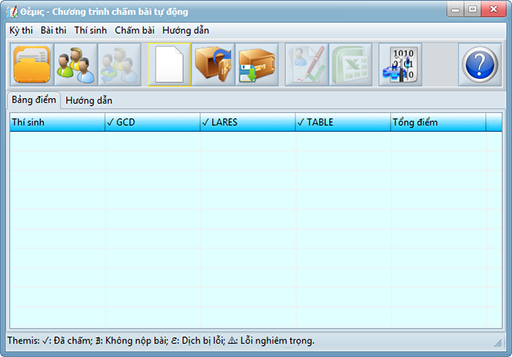
Chỉ những bài được chọn (có dấu kiểm “✓” bên cạnh tên bài) mới được chấm. Để chọn/bỏ chọn một bài, bấm chuột phải vào tiêu đề cột hoặc vào cấu hình mỗi bài thi và đánh dấu/bỏ đánh dấu ô “Có chấm bài này”)
|
Chú ý: Khi nạp danh sách bài thi mới, toàn bộ bảng điểm sẽ bị xóa. Nếu muốn thêm/bớt bài thi bằng cách bổ sung thêm thư mục con, dùng chức năng cập nhật danh sách bài thi.
Việc cấu hình một bài thi được thực hiện bằng cách dùng các menu con trong menu “Bài thi”. Một cách nhanh hơn là bấm chuột phải vào tiêu đề cột tương ứng với bài thi và chọn menu con “Cấu hình bài thi”.
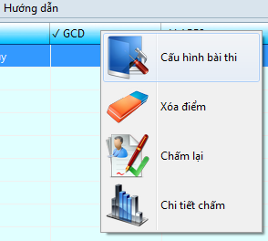
Cửa sổ cấu hình bài thi hiện ra như sau:
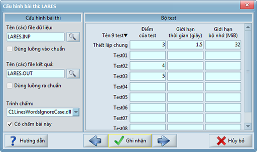
- Các tests: Mỗi thư mục con trong thư mục một bài thi chứa thông tin về một test. Như ví dụ trên, bài LARES có 9 test với tên từ Test01 đến Test09.
- Tên các file dữ liệu: Trước khi chạy chương trình của thí sinh, các file này sẽ được copy vào thư mục hoạt động để cung cấp dữ liệu cho chương trình. Mỗi test có một bộ file dữ liệu riêng, được đặt trong thư mục của test. Nếu có nhiều file dữ liệu, các tên file phải ghi cách nhau bởi ký tự "|" (mã số 124). Trường hợp bài chạy không cần file dữ liệu (chẳng hạn như các dạng bài nộp output only), ô này có thể để trống.
- Dùng luồng vào chuẩn:Nếu đánh dấu ô này, file dữ liệu đầu tiên trong danh sách sẽ được định hướng làm luồng vào chuẩn (standard input) khi chạy chương trình của thí sinh. Nếu không đánh dấu, luồng vào chuẩn cho chương trình của thí sinh mặc định là bàn phím và thường không được sử dụng khi chấm tự động.
- Tên các file kết quả: Sau khi chạy chương trình của thí sinh, các file này sẽ được bộ chấm sử dụng để phân tích và chấm điểm. Mỗi test có một bộ file kết quả riêng, được đặt trong thư mục của test giống như các file dữ liệu. Nếu có nhiều file kết quả, các tên file phải ghi cách nhau bởi ký tự "|" (mã số 124). Nếu bộ chấm không cần cung cấp tên file kết quả (chẳng hạn như các dạng chấm ngoài với tên file kết quả biết trước), ô này có thể để trống.
- Dùng luồng ra chuẩn: Nếu đánh dấu ô này, file kết quả đầu tiên trong danh sách sẽ được định hướng làm luồng ra chuẩn (standard output) khi chạy chương trình của thí sinh. Nếu không đánh dấu, luồng ra chuẩn cho chương trình của thí sinh mặc định là màn hình và thường không được sử dụng khi chấm tự động.
- Chương trình chấm: Có 7 bộ chấm đi kèm với phần mềm. Ngoài ra người sử dụng có thể bổ sung thêm những bộ chấm khác (Tham khảo trong mục Các câu hỏi thường gặp)
- C1LinesWordsIgnoreCase, C2LinesWordsCase, C3WordsIgnoreCase, C4WordsCase: Được áp dụng khi các file kết quả là file văn bản ASCII. Bộ chấm đối sánh từng file kết quả trong thư mục của mỗi test với file trùng tên do chương trình của thí sinh tạo ra khi chạy với test đó. Trong các bộ chấm này, hai ký tự mang mã số 9(dấu tab) và 32(dấu cách) được coi là dấu phân tách từ trên dòng.
- C1LinesWordsIgnoreCase: Hai file được coi là khớp nhau (đúng) nếu chúng khớp nhau về danh sách các từ kể cả về thứ tự của từ trên dòng và thứ tự của dòng chứa từ trong file. Việc so khớp từ không phân biệt chữ hoa và chữ thường. Việc thừa một số dòng trống cuối file hoặc thừa một số dấu phân tách từ đầu file không ảnh hưởng tới kết quả, tuy nhiên việc thừa một dòng trống đầu file sẽ làm ảnh hưởng tới kết quả do cơ chế đối sánh của bộ chấm.
- C2LinesWordsCase: Việc đối sánh giống như bộ chấm
C1LinesWordsIgnoreCase, nhưng việc so khớp từ có phân biệt chữ hoa và chữ thường.
- C3WordsIgnoreCase: Hai file được coi là khớp nhau (đúng) nếu chúng khớp nhau về danh sách các từ và thứ tự các từ trong file. Việc so khớp từ không phân biệt chữ hoa và chữ thường. Các từ có thể ghi trên cùng dòng cách nhau bởi dấu phân tách từ hoặc ghi trên nhiều dòng khác nhau mà không ảnh hưởng tới kết quả.
- C4WordsCase: Việc đối sánh giống như bộ chấm C3WordsIgnoreCase, nhưng việc so khớp từ có phân biệt chữ hoa và chữ thường.
- C5Binary: Được áp dụng với mọi loại file kết quả. Bộ chấm đối sánh từng file kết quả trong thư mục của mỗi test với file trùng tên do chương trình của thí sinh tạo ra khi chạy với test đó. Việc đối sánh được thực hiện trên từng byte của file
- C6AMM2External: Nạp trình chấm ngoài tương thích với AMM2. Trình chấm ngoài được đặt trong thư mục bài thi tương ứng, có tên là *.exe trong đó * là tên bài thi. Trình chấm ngoài có nhiệm vụ:
Chạy trong thư mục hoạt động, trong đó có các file kết quả của thí sinh đã chạy với một test.
Nhận vào một file văn bản ASCII “COMPAR$R.INP” gồm một dòng duy nhất chứa tên thư mục của test tương ứng. Tên thư mục đã được mã hóa utf-8, tức là nếu tên thư mục chứa những ký tự có mã số ≥ 128 (ví dụ tiếng Việt có dấu unicode) thì trình chấm ngoài cần giải mã utf-8 để có được tên thư mục thật sự.
Xuất ra file văn bản ASCII “COMPAR$R.OUT” với khuôn dạng: Dòng 1 có dạng DUNG, SAI, SAIDINHDANG hoặc DUNGMOTPHAN p với p là một số nguyên trong phạm vi từ 0 tới 100 đánh giá độ tốt của kết quả. Các dòng tiếp theo là những lời nhận xét về kết quả.
Chú ý: Bộ chấm C6AMM2External chỉ dùng để giữ tính tương thích với những trình chấm ngoài cũ. Nếu viết những trình chấm ngoài mới, đề nghị sử dụng bộ chấm C7External.
- C7External: Nạp trình chấm ngoài. Trình chấm ngoài được đặt trong thư mục bài thi tương ứng, có tên là Check*.exe trong đó * là tên bài thi.
Khi chương trình của thí sinh chạy xong một test, trình chấm ngoài được kích hoạt và chạy trong thư mục hoạt động, trong đó có các file kết quả của thí sinh đã chạy với một test.
Trình chấm ngoài được cung cấp luồng vào chuẩn (standard input) gồm 2 dòng: Dòng 1 là tên thư mục chứa dữ liệu của test. Dòng 2 là tên thư mục đang hoạt động. Tên thư mục đã được mã hóa utf-8 và có dấu “\” ở cuối xâu, tức là nếu tên thư mục chứa những ký tự có mã số ≥ 128 (chẳng hạn các ký tự tiếng Việt có dấu unicode) thì trình chấm ngoài cần giải mã utf-8 để có được tên thư mục thật sự.
Trình chấm ngoài cần đưa ra luồng ra chuẩn (standard output) các nhận xét về kết quả chấm, dòng cuối cùng của luồng ra chuẩn gồm duy nhất một số thực trong phạm vi từ 0.00 tới 1.00 là đánh giá về điểm. Giá trị này sẽ được nhân với điểm của test.
Để đưa ra các nhận xét bằng tiếng Việt có dấu unicode, cách làm tương tự như xuất ra một file văn bản utf-8: Trình chấm ngoài trước tiên phải xuất ra 3 ký tự ASCII mã số 239, 187 và 191 (utf-8 BOM), sau đó là các thông báo unicode đã được mã hóa utf-8. Chẳng hạn: Nếu trình chấm ngoài đưa ra thiết bị xuất chuẩn:
Kết quả gần đúng
0.68
Có nghĩa là:
Kết quả gần đúng
0.68
Dĩ nhiên nếu chỉ xuất các ký tự ASCII thì không cần quan tâm tới vấn đề này
- Cấu hình bộ test: Thiết lập cho từng test bao gồm: điểm, giới hạn thời gian, giới hạn bộ nhớ của bài làm khi chạy test đó lúc chấm. Nếu không có thiết lập riêng cho test, những thông tin này sẽ lấy từ thiết lập chung.
Chú ý:
- Khi đặt lại cấu hình một bài thi, hệ thống sẽ khuyến cáo người sử dụng xóa điểm của bài thi đó khỏi bảng điểm. Nếu không có lý do đặc biệt, người sử dụng nên cho phép xóa và chấm lại cho phù hợp với các thiết lập mới của bài thi
- Nếu bài thi đặt trong thư mục mà hệ thống có quyền ghi. Hệ thống sẽ ghi lên thư mục của mỗi bài thi một file nhỏ có tên là settings.cfg lưu cấu hình bài thi vừa thiết lập. Nếu kỳ thi khác muốn sử dụng bài thi này với những thiết lập vừa đặt sẽ không cần cấu hình lại.
Danh sách thí sinh được nạp vào bằng thư mục chứa các bài làm (Contestants). Như đã chuẩn bị, mỗi thư mục con trong thư mục này chứa bài làm của một thí sinh trong danh sách. Ví dụ nếu có cấu trúc thư mục:
|
|
Khi đó nếu người dùng bấm nút (hoặc phím tắt F3) và chọn thư mục Contestants, 2 thí sinh với mã tên là BadGuy và Jury sẽ được nạp vào danh sách:
Thao tác nhanh: Một cách khác để nạp danh sách thí sinh là kéo thư mục chứa danh sách thí sinh (thư mục Contestants) từ Explorer thả vào cột “Thí sinh” trong tab “Bảng điểm”.
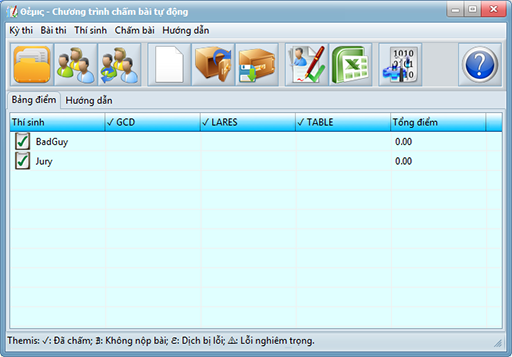
Chỉ những thí sinh được chọn (có dấu kiểm “✓” bên cạnh tên thí sinh) mới được chấm bài.
|
Chú ý: Khi nạp danh sách thí sinh mới, toàn bộ bảng điểm sẽ bị xóa. Nếu muốn thêm/bớt thí sinh bằng cách bổ sung hay xóa thư mục con, dùng chức năng cập nhật danh sách thí sinh.
Nút (hay phím tắt F4) dùng để cập nhật lại danh sách bài thi. Mỗi khi thư mục chứa các bài thi có sự thay đổi thư mục con, nút này sẽ tự động đổi màu để nhắc nhở người dùng cập nhật lại danh sách bài thi.
- Nếu một thư mục của bài thi bị xóa hoặc chuyển khỏi thư mục chứa danh sách bài thi, cột điểm của bài thi đó sẽ bị loại khỏi vùng làm việc, các cột khác giữ nguyên.
- Nếu một thư mục của bài thi được thêm vào thư mục chứa danh sách bài thi, một cột điểm trống mới ứng với bài thi mới sẽ được thêm vào, các cột khác giữ nguyên.
- Nếu một thư mục ứng với một bài thi có sự thay đổi về nội dung (chẳng hạn thêm/bớt/thay đổi test), hệ thống vẫn cập nhật nội dung mới nhưng vẫn giữ nguyên cột điểm cũ do việc đánh giá mức độ thay đổi khá tốn thời gian với những bài có bộ test lớn. Người dùng sẽ phải cấu hình lại bài thi theo nội dung mới và chấm lại.
Nút (hay phím tắt F5) dùng để cập nhật lại danh sách thí sinh. Mỗi khi thư mục chứa các bài làm của thí sinh có sự thay đổi thư mục con, nút này sẽ tự động đổi màu để nhắc nhở người dùng cập nhật lại danh sách thí sinh.
- Nếu một thư mục của thí sinh bị xóa hoặc chuyển khỏi thư mục chứa danh sách bài làm, hàng điểm của thí sinh đó sẽ bị loại khỏi vùng làm việc, các hàng khác giữ nguyên.
- Nếu một thư mục của thí sinh được thêm vào thư mục chứa danh sách bài làm, một hàng điểm trống mới ứng với thí sinh mới sẽ được thêm vào, các hàng khác giữ nguyên.
- Nếu một thư mục của thí sinh có sự thay đổi về nội dung (chẳng hạn nộp lại bài), hệ thống vẫn cập nhật nội dung mới nhưng vẫn giữ nguyên hàng điểm cũ do việc đánh giá mức độ thay đổi khá tốn thời gian. Người dùng sẽ phải chấm lại bài của thí sinh này. Nếu thư mục các bài làm là thư mục chia sẻ để thí sinh nộp bài trong mạng nội bộ, thí sinh nên tạo một thư mục mới để tránh nhầm lẫn. Phiên bản kế tiếp sẽ có thể chức năng lưu trữ: Mỗi thí sinh khi chấm bài xong sẽ được nén bài làm lại và đẩy sang cơ sở dữ liệu lưu trữ, thư mục của thí sinh sẽ được xóa ngay sau đó.
Bài làm của các thí sinh có thể viết bằng nhiều ngôn ngữ lập trình và nhiều công cụ phát triển khác nhau. Tùy theo quy chế của kỳ thi, có thể cần đặt lại các thông số của bộ dịch cho chính xác. Ngoài các thiết lập mặc định về bộ dịch, người dùng có thể bổ sung, loại bỏ các chương trình dịch hoặc sửa đổi tham số dịch mặc định. Để thiết lập cấu hình bộ dịch, bấm nút (hoặc phím tắt F6). Hộp thoại cấu hình bộ dịch hiện ra gồm một danh sách, chứa các phần mở rộng và lệnh dịch tương ứng:
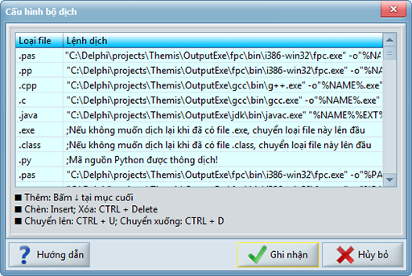
Việc dịch bài làm của thí sinh được thực hiện trước khi chấm mỗi bài. Giả sử thí sinh giải bài thi tên là PROBLEM thì tên bài làm của thí sinh phải có dạng PROBLEM.* với * là phần mở rộng do đề bài hoặc công cụ lập trình quy định. Hệ thống sẽ tìm trong danh sách kể trên phần mở rộng khớp với * và thực hiện lệnh dịch tương ứng để dịch bài của thí sinh ra thành file khả thi PROBLEM.EXE (file bài làm bằng ngôn ngữ JAVA *.java sẽ được dịch ra thành file *.class).
Nếu thí sinh nộp nhiều bài giải cho một bài thi bằng nhiều ngôn ngữ khác nhau, trong nhiều file khác nhau, thì phần mở rộng đầu tiên trong danh sách mà hệ thống tìm thấy file sẽ được chọn và chỉ một file tương ứng đó được dịch theo dòng lệnh tương ứng và chấm. Như ví dụ và danh sách trên, nếu thí sinh nộp cả 4 file: PROBLEM.pas, PROBLEM.cpp, PROBLEM.java và PROBLEM.exe thì chỉ có file PROBLEM.pas được dịch và chấm
Việc thêm/bớt/thay đổi thứ tự các phần mở rộng có thể thực hiện dễ dàng bằng các phím hướng dẫn trong hộp thoại. Để soạn thảo, thay đổi lệnh dịch, người dùng gõ trực tiếp vào danh sách.
Trong mỗi lệnh dịch, các thành phần sau đây sẽ được thay thế khi dịch:
- %PATH% sẽ được thay bằng đường dẫn tới bài cần dịch (có cả dấu \ ở cuối)
- %NAME% sẽ được thay bằng tên bài thi
- %EXT% sẽ được thay bằng phần mở rộng trong tên file bài làm của thí sinh
Ví dụ:
Nếu thư mục hoạt động là c:\WorkSpace\ và thí sinh nộp bài làm PROBLEM1.pas cho bài thi PROBLEM1. Lệnh dịch:
"fpc.exe" -o"%PATH%%NAME%.exe" -O2 -XS -Sg "%PATH%%NAME%%EXT%"
khi thực thi sẽ là:
"fpc.exe" -o"c:\WorkSpace\PROBLEM1.exe" -O2 -XS -Sg "c:\WorkSpace\PROBLEM1.pas"
Mỗi lệnh dịch khi thực hiện sẽ chạy trong thư mục chứa chương trình dịch trừ phi cuối dòng lệnh dịch có thêm chỉ dẫn |@WorkDir="Tên thư mục" để chỉ ra tên thư mục hoạt động khi chạy lệnh dịch. Chỉ dẫn này có ích nếu người dùng đặt “phòng thi” trong thư mục có tên chứa ký tự unicode nằm ngoài bảng mã ANSI, một số chương trình dịch không tương thích unicode sẽ không đọc được tham số dòng lệnh chứa ký tự này. Với chỉ dẫn |@WorkDir="%PATH%", các thành phần như tên ổ đĩa và thư mục có thể loại bỏ khỏi tham số dòng lệnh và trình dịch không còn bị rắc rối với những ký tự unicode nữa.
Ví dụ:
Nếu thư mục hoạt động là c:\Thi thử\ và thí sinh nộp bài làm PROBLEM1.pas cho bài thi PROBLEM1. Lệnh dịch:
"fpc.exe" -o"%NAME%.exe" -O2 -XS -Sg %NAME%%EXT%"|@WorkDir="%PATH%"
sẽ chạy trong thư mục c:\Thi thử\ theo tham số:
"fpc.exe" -o" PROBLEM1.exe" -O2 -XS -Sg "PROBLEM1.pas"
(Ký tự “ử” nằm ngoài bảng mã ASCII không còn xuất hiện trong tham số dòng lệnh nữa)
Nếu một dạng file bài làm cần dịch bằng nhiều lệnh tuần tự mới có được file .exe thì người dùng cần làm một tiến trình chung chạy tuần tự các lệnh dịch rồi đưa tiến trình chung này vào cấu hình bộ dịch. Cách đơn giản nhất là làm một file .bat. Chẳng hạn như:
"cmd.exe" compiler.bat "%PATH%%NAME%%EXT%"
Khuyến cáo: Nên sử dụng phiên bản mới nhất cho các chương trình dịch bằng cách: Tải về và cài đặt theo đúng hướng dẫn của nhà phân phối, sau đó sửa lại đường dẫn tới các bộ dịch trong hộp thoại "Cấu hình bộ dịch".
Một số chương trình dịch phổ biến:
FPC cho ngôn ngữ Pascal
GCC/G++ cho ngôn ngữ C/C++
JDK cho ngôn ngữ Java
Trình thông dịch PYTHON
Nút (hay phím tắt F9) sẽ mở hộp thoại “Chấm bài”. Chú ý là chỉ những bài làm và bài thi nào đánh dấu kiểm (✓) mới được chấm. Bộ chấm sẽ được kích hoạt ngay và các thanh tiến trình cho biết đã chấm đến test nào, của bài nào và của thí sinh nào. Điểm sẽ được cập nhật ngay khi mỗi bài làm của thí sinh được chấm xong
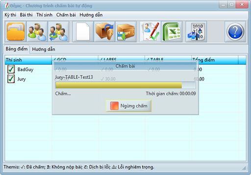
Khi chấm xong mỗi bài nộp, kết quả chấm sẽ được hiện ra ngay trong vùng làm việc ở tab “Bảng điểm”:
- Nếu bài làm của một thí sinh chưa được chấm, ô điểm của bài và thí sinh tương ứng sẽ trống
- Nếu bài làm không được tìm thấy trong thư mục của một thí sinh (do sai tên file hoặc thí sinh không nộp bài), ô điểm của bài và thí sinh tương ứng sẽ được đánh dấu ∄ (there does not exist)
- Nếu bài làm của thí sinh gặp lỗi khi dịch (do có lỗi cú pháp), ô điểm của bài và thí sinh tương ứng sẽ được đánh dấu ℱ (failure)
- Nếu bài làm của thí sinh chạy gặp lỗi nghiêm trọng, khiến hệ thống chấm buộc phải dừng quá trình chấm bài đó một cách bất thường, ô điểm của bài và thí sinh tương ứng sẽ được đánh dấu ⚠ (critical error)
- Nếu bài làm của thí sinh dịch được và chấm xong, ô điểm của bài và thí sinh tương ứng sẽ hiện điểm kèm theo dấu ✓ (checked)
Chú ý:
- Nếu bài làm viết bằng ngôn ngữ Java (được Themis dịch ra thành file *.class) thì cần có máy ảo JAVA để thực thi mã bytecode bên trong. Nếu máy có cài JRE, Themis sẽ sử dụng JRE được cài sẵn trên máy. Nếu máy không cài JRE. Themis sẽ sử dụng JRE trong thư mục JDK\
- Nếu bài làm viết bằng ngôn ngữ Python (thông dịch), Themis sẽ sử dụng Python trong thư mục PYTHON\. Nếu bạn muốn thay đổi version khác của Python, chỉ cần copy vào thư mục này.
Trong chế độ chấm trực tuyến, các thí sinh sẽ nộp bài (trực tuyến) vào chung một thư mục gọi là “thư mục nộp bài trực tuyến” (Online-Submission Directory – OSD). Bất cứ khi nào có bài mới ghi vào OSD, hệ thống sẽ chấm ngay bài đó và trả về kết quả chấm.
Để thiết lập chế độ chấm trực tuyến:
Bước 1: Thiết lập một kỳ thi (offline) như bình thường, tức là nạp thư mục chứa bài thi và cấu hình bài thi đầy đủ, nạp thư mục chứa bài làm (có thể rỗng), kiểm tra cấu hình dịch và chế độ bảo mật… Chú ý là để chấm trực tuyến, Themis phải có quyền ghi lên thư mục chứa bài làm.
Bước 2: Nhấn nút hoặc phím tắt F11 để mở hộp thoại “Thiết lập môi trường”, sau đó điền tên OSD vào trong ô “Thư mục nộp bài trực tuyến”:
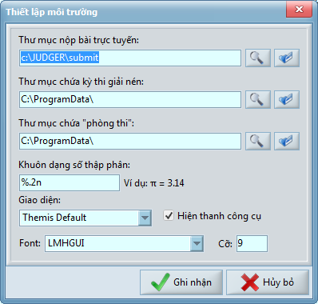
Các thiết lập như vậy là xong, hệ thống chấm trực tuyến vận hành như sau:
(a) Nộp bài:
Thí sinh (hoặc một phần mềm dịch vụ) ghi bài vào OSD theo quy cách:
*[Mã Thí sinh][Tên bài thi].EXT
Trong đó
- * là một dãy ký tự bất kỳ (do hệ thống nộp bài hoặc thí sinh tự đặt), không có ý nghĩa với hệ thống chấm
- Mã thí sinh để xác định thí sinh, nếu mã thí sinh này chưa có trong danh sách thí sinh, hệ thống sẽ tự bổ sung thí sinh này vào danh sách và tạo thư mục bài làm cho thí sinh đó trong thư mục chứa các bài làm.
- Tên bài thi để xác định bài nộp của thí sinh ứng với bài thi nào, nếu tên bài thi không có trong danh sách bài thi đã thiết lập, bài nộp này bị bỏ qua.
- EXT là phần mở rộng do ngôn ngữ lập trình quy định. Thí sinh chỉ được nộp 1 file cho 1 bài làm. Trường hợp bài làm của thí sinh cần một số file phụ trợ khác mới chạy được thì cần nén bài làm và tất cả các file phụ trợ vào trong một file .ZIP, trong trường hợp này phần mở rộng EXT là “ZIP”.
Chú ý: Dấu mở/đóng ngoặc vuông là cần thiết, ví dụ nếu thí sinh ABC nộp bài TABLE viết bằng ngôn ngữ Pascal thì tên file nộp trực tuyến có thể đặt là: 1234[ABC][TABLE].pas
(b) Nhận bài
Ngay khi nhận được bài, hệ thống sẽ chuyển bài nộp 1234[ABC][TABLE].pas vào thư mục chứa bài làm của thí sinh ABC, bài nộp này sau đó sẽ được đổi tên thành TABLE.pas (những bài nộp trước đây của thí sinh ABC cho bài thi TABLE sẽ được chuyển vào thư mục con $History)
(c) Chấm bài và báo kết quả
Hệ thống chấm bài TABLE của thí sinh ABC, ghi lại biên bản chấm vào thư mục con “logs” của OSD. Biên bản chấm có tên file dạng: tên file nộp nối thêm đuôi .log, như ví dụ này, biên bản chấm sẽ được ghi vào file “1234[ABC][TABLE].pas.log”. Thí sinh (hoặc phần mềm dịch vụ) có thể đọc file này lấy kết quả chấm. Nếu thí sinh nộp nhiều lần bài giải cho một bài thi, điểm của thí sinh trong bảng điểm được lấy từ kết quả chấm bài nộp cuối cùng.
Chú ý kỹ thuật:
- Chức năng chấm bài trực tuyến thường được cho tương tác với một phần mềm nộp bài. Phần mềm nộp bài chạy trên máy của thí sinh hoặc web service có nhiệm vụ nộp file vào OSD (chứa trên máy chấm) theo đúng quy định tên file, sau đó chờ biên bản chấm và gửi lại cho thí sinh biết kết quả, đồng thời có thể lưu lại biên bản trong cơ sở dữ liệu lưu trữ. Yêu cầu duy nhất khi viết phần mềm nộp bài là phải thực hiện đọc/ghi file trong OSD càng nhanh càng tốt, tránh làm chậm máy chấm. Vì vậy phần mềm nộp bài nên ghi bài nộp lên một thư mục khác, sau khi việc ghi hoàn tất mới chuyển bài nộp sang OSD.
- Nếu có điều kiện, thiết lập càng nhiều máy chấm trong mạng càng tốt: Kỳ thi trên các máy chấm được cấu hình như nhau, nhưng mỗi máy chấm có một OSD riêng biệt. Phần mềm nộp bài cần phân phối các bài nộp lên các máy chấm để giảm thiểu thời gian chờ đợi kết quả, ảnh hưởng tới tiến độ làm bài của thí sinh
Để xem kết quả chấm chi tiết, người dùng có thể nhấn đúp chuột vào một ô trong bảng điểm. Cửa sổ báo cáo sẽ hiện ra đủ thông tin về kết quả chấm trên mỗi test:
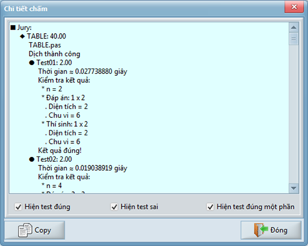
Nếu người dùng nhấn đúp chuột vào ô chứa tên thí sinh hoặc ô chứa tổng điểm của một thí sinh, toàn bộ thông tin về kết quả chấm bài của thí sinh đó sẽ được báo cáo. Nếu người dùng nhấn đúp chuột vào ô khác, chỉ những thông tin về một bài thi của thí sinh ứng với ô đó được báo cáo
Nút (hay phím tắt CTRL+F9) sẽ kết xuất dữ liệu từ cả hai tabs “Tổng hợp” và “Chi tiết” ra Microsoft Excel. Chức năng này chỉ kích hoạt Excel và kết xuất dữ liệu ra 2 tabsheet của Excel. Việc ghi file excel này vào đâu là do người dùng quyết định, hệ thống không tự động ghi lại file excel.
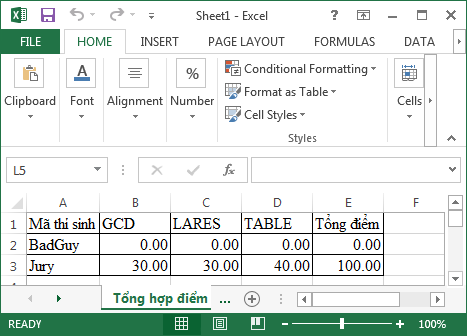
Chức năng tạo kỳ thi mới (CTRL+N) sẽ tạo một kỳ thi mới với danh sách bài thi cũng như danh sách thí sinh rỗng.
Chức năng ghi kỳ thi (CTRL+S) sẽ nén toàn bộ các dữ liệu sau:
- Toàn bộ thư mục bài làm của thí sinh
- Toàn bộ thư mục chứa bài thi
- Các cấu hình bài thi đã thiết lập
- Kết quả chấm bài
vào một file do người dùng tự chọn có phần mở rộng là .contest để lưu trữ thông tin về toàn bộ kỳ thi. Những file chứa trực tiếp trong thư mục bài làm và bài thi (không đặt trong thư mục con) tuy không có nghĩa đối với hệ thống chấm nhưng cũng sẽ được nén cùng. Người dùng có thể lưu đề bài, bảng xếp giải, các biên bản v.v… trong những file này.
Các file .contest là những file .zip bình thường. Chỉ cần đổi phần mở rộng “.contest” thành “.zip” là bạn có thể bung nén bằng rất nhiều chương trình thông dụng (Zip Folder, WinZIP, WinRaR) để sử dụng vào mục đích khác
Chức năng mở kỳ thi (CTRL+O) cho phép người dùng nạp một kỳ thi cũ đã nén bằng chức năng ghi kỳ thi. File .contest do người dùng nạp vào sẽ được bung nén vào thư mục ThemisContest trong thư mục giải nén. Hệ thống sẽ tự cập nhật cấu hình bài thi và kết quả chấm của kỳ thi cũ
Chú ý: Khi mở file .contest, một thư mục con ThemisContest sẽ được tạo ra trong thư mục chứa kỳ thi giải nén. Thư mục này chứa hai thư mục con Tasks và Contestants tương ứng là thư mục chứa bài thi và thư mục chứa bài làm của các thí sinh. Không ghi những thông tin quan trọng vào thư mục ThemisContest vì mỗi lần mở một file .contest thì thư mục này sẽ bị xóa và tạo lại. Để đặt lại thư mục chứa kỳ thi giải nén, nhấn nút hoặc phím tắt F11:
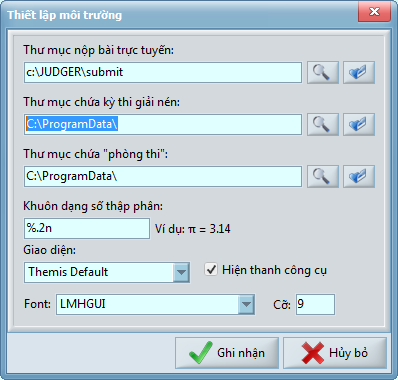
Trong những kỳ thi chính thức, những lỗ hổng bảo mật nếu bị các thí sinh khai thác có thể gây hậu quả nghiêm trọng ảnh hưởng tới kết quả thi. Trên những máy cài đặt hệ điều hành Windows, nếu sơ ý trong thiết lập hệ thống an ninh thì chỉ bằng vài dòng lệnh (vô tình hoặc cố ý) là chương trình của thí sinh có thể thực hiện những tác vụ nguy hiểm, chẳng hạn như:
- Dò tìm thư mục chứa bài thi, từ đó có thể sửa đổi bộ test, chép đáp án, làm sai lệch trình chấm ngoài…
- Dò tìm thư mục chứa bài làm, xóa hoặc sửa đổi bài làm của mình hoặc thí sinh khác…
- Khởi động lại máy để cài đặt một dịch vụ nhằm vô hiệu hóa các hệ thống an ninh, từ đó phát tán các thông tin nội bộ của kỳ thi.
Phải nói thêm là trong các hệ điều hành Windows cũ hơn thế hệ Windows 2000, những tác vụ trên là không thể ngăn chặn được.
Themis được thiết kế hệ thống an ninh nhằm vô hiệu hóa những tác vụ truy cập trái phép có thể gây nguy hiểm. Ngoài các mô-đun quản lý các tiến trình và bộ nhớ của Themis, việc kích hoạt chế độ bảo mật có hiệu quả hay không còn cần sự thiết lập đúng từ phía người sử dụng.
Các bước kích hoạt hệ thống an ninh
Bước 1: Chuẩn bị ít nhất một phân vùng đĩa NTFS. Windows và Themis phải đặt trên một phân vùng đĩa NTFS mà muốn ghi hay thay đổi cần có quyền quản trị. Những người dùng khác chỉ được phép đọc thư mục và khởi động Themis.
Bản thân hệ điều hành Windows từ phiên bản XP trở lên khi cài đặt đều khuyến cáo người dùng sử dụng các phân vùng đĩa NTFS. Cách chuyển một phân vùng đĩa từ FAT hay FAT32 sang NTFS khá đơn giản.
Bước 2: Tạo hai người dùng với tên đăng nhập và mật khẩu tùy chọn, tạm gọi là THÍ SINH và GIÁM THỊ.
- THÍ SINH không được có quyền quản trị, tức là không thuộc nhóm Administrators cũng như Power Users. Có thể bật Guest account làm THÍ SINH (Xem cách bật/tắt Guest account trên Windows XP, Windows Vista và Windows Seven)
- THÍ SINH phải được quyền chạy Themis. Ngoài ra phải có toàn quyền kiểm soát trên thư mục chứa bài thi, thư mục chứa bài làm và thư mục “phòng thi” (nơi mà bài làm của các thí sinh được copy vào cùng với test để chạy).
- GIÁM THỊ cũng không nhất thiết phải là người có quyền quản trị máy. Thậm chí không cần phải có quyền truy cập thư mục bài thi, bài làm và “phòng thi”.
Bước 3: Đăng nhập vào người dùng THÍ SINH, chạy Themis, nhấn nút hoặc phím tắt F7 để mở hộp thoại “Bảo mật”.

Đánh dấu ô “Kích hoạt chế độ bảo mật” và điền đủ các thông số: Quyền bảo mật, Mật mã, Tên miền: Các thông số đăng nhập của người dùng GIÁM THỊ.
Bước 4: Đặt thư mục chứa phòng thi lên phân vùng NTFS: nhấn nút hoặc phím tắt F11:
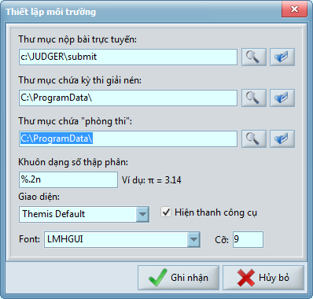
Trong ô “Thư mục chứa “phòng thi””, chọn một thư mục trên phân vùng NTFS mà người dùng THÍ SINH có quyền tạo thư mục con gọi là “phòng thi” và toàn quyền trên thư mục con đó. Khi chấm một test, các file dữ liệu của test, bài làm của thí sinh, cùng cả file .EXE đã dịch sẽ được chép vào “phòng thi” và chạy ở đây để sinh ra các file kết quả
Việc kích hoạt hệ thống bảo mật chỉ cần như vậy là xong.
Cơ chế bảo mật của Themis có thể tóm tắt như sau:
THÍ SINH và GIÁM THỊ là hai người dùng khác nhau, vì thí sinh không có quyền quản trị nên có những vùng dữ liệu của GIÁM THỊ mà thí sinh không thể truy cập được dưới mọi hình thức (đọc, ghi, thêm, xóa, …).
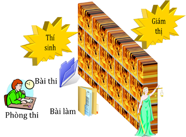
Themis chạy trong phân quyền THÍ SINH và như vậy Themis có đầy đủ quyền như THÍ SINH, tức là toàn quyền trên thư mục bài thi, bài làm và được tạo lập “phòng thi” trong thư mục đã chỉ định. Tuy nhiên, khác với THÍ SINH là Themis biết mã đăng nhập của GIÁM THỊ vì vậy có thể truy cập vùng dữ liệu dành riêng của GIÁM THỊ
Trước khi chấm, Themis dùng quyền của THÍ SINH để cho GIÁM THỊ toàn quyền truy cập thư mục bài thi, bài làm và phòng thi. Bên cạnh đó, Themis cấm luôn quyền truy cập thư mục bài thi và thư mục bài làm của THÍ SINH dưới mọi hình thức.
Khi bắt đầu chấm một test, Themis dùng quyền của GIÁM THỊ để chép một bài làm cùng các file dữ liệu của một test vào phòng thi. Sau đó bài làm được dịch ra .EXE và chạy với quyền của THÍ SINH. Với quyền này thì các mã lệnh trong file .EXE không thể truy cập thư mục chứa các bài thi và bài làm được nữa
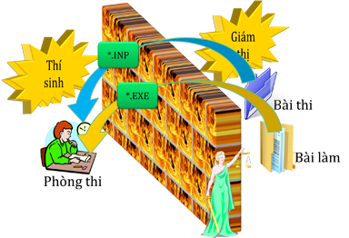
Khi file .EXE đã kết thúc, bộ chấm được kích hoạt chạy trong phân quyền THÍ SINH. Bộ chấm có thể đọc/ghi trên thư mục chứa test vừa chấm vì Themis đã dùng quyền của GIÁM THỊ mở khóa thư mục chứa test cho THÍ SINH truy cập. Khi bộ chấm kết thúc, thư mục chứa test sẽ được khóa trở lại.
Sau khi tất cả các bài làm đã được chấm, Themis trả lại toàn quyền truy cập các thư mục bài thi và bài làm cho thí sinh
Tóm lại, khi chế độ bảo mật được kích hoạt, Themis phải chạy với người dùng THÍ SINH để quản lý bộ nhớ và ngắt bài làm đang chạy khi hết giờ. Bên cạnh đó Themis liên hệ với người dùng GIÁM THỊ để “nhờ” giữ những thư mục bí mật, đảm bảo các chương trình chạy dưới phân quyền THÍ SINH không thể truy cập được.
- Làm thế nào để phục hồi cấu hình mặc định?
- Chạy Themis với tham số Themis.exe /clean sẽ phục hồi trạng thái mặc định của các bộ dịch và biến môi trường.
- Làm thế nào để chấm lại chỉ riêng một bài/một thí sinh?
- Bấm nút chuột phải vào ô cần chấm lại, chọn “Chấm lại”.
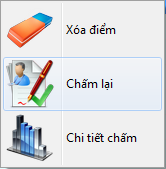
Nếu ô được chọn ứng với một thí sinh và một bài thi, chỉ riêng bài nộp ứng với bài thi đó của thí sinh được chấm lại
Nếu ô được chọn chứa mã thí sinh, toàn bộ các bài nộp của thí sinh đó được chấm lại.
Nếu ô được chọn là tiêu đề cột ứng với một bài thi, toàn bộ bài nộp của các thí sinh ứng với bài thi đó được chấm lại
- Máy không hiển thị được các ký tự đặc biệt, chẳng hạn như các ký hiệu \CheckMark (✓), \ThereDoesNotExist (∄), \Failure (ℱ), \Critical Error (⚠) đều hiển thị thành ô vuông ?
- Lý do là máy chưa cài đặt các bộ fonts để hiển thị được những ký tự này. Một trong những cách khắc phục là:
1. Cài đặt font LMHGUI nếu hệ thống chưa có font chữ này (font này có trong thư mục chứa Themis khi cài đặt)
2. Bấm F11 để mở hộp thoại “Thiết lập môi trường”, chọn font chữ cho giao diện là LMHGUI.
- Các tham số dịch mặc định lấy theo quy định nào?
- Các tham số dịch của FPC, GCC/G++ được tham khảo từ quy chế của kỳ thi IOI 2011. Các tham số dịch của JAVAC được tham khảo từ quy chế của kỳ thi ACM WF 2012.
- Có hạn chế nào trong việc đặt tên thư mục không?
- Themis làm việc tốt với bảng mã Unicode, tên thư mục hoàn toàn có thể chứa các ký tự nằm ngoài bảng mã ASCII mà không gặp trở ngại gì. Tuy nhiên người dùng cần chú ý là ba thư mục sau không được phép chứa nhau: thư mục chứa các bài thi, thư mục chứa các bài làm và thư mục “phòng thi”.
- Thời gian thực hiện của bài làm trong hệ thống chấm không giống thời gian thực hiện của bài làm khi chạy riêng biệt?
- Thời gian thực thi chương trình tại hai thời điểm khác nhau có sai khác là bình thường nếu thời gian thực thi bị phụ thuộc một vài tiến trình ngẫu nhiên trong chương trình. Đôi khi thời gian thực thi chương trình bị ảnh hưởng bởi nhiệt độ CPU và RAM nhưng sai số thời giam trong trường hợp này thường không đáng kể. Sự khác biệt chỉ lớn khi có các chương trình quét virus hoặc ứng dụng quản lý đĩa đang hoạt động làm giảm tốc độ nhập xuất dữ liệu. Vì vậy cần tắt các chương trình này trước khi chấm.
Tốc độ của bài làm khi chạy trong hệ thống chấm có thể nhanh hơn so với việc chạy riêng biệt bài làm (khoảng vài chục milli giây nếu file dữ liệu kích thước ~10MiB). Lý do là hệ thống chấm phải copy các file dữ liệu vào thư mục hoạt động. Trong quá trình copy, hệ điều hành lưu lại một lượng lớn dữ liệu trong bộ nhớ cache, chương trình của thí sinh có thể đọc một lượng lớn dữ liệu đó trong bộ nhớ mà không cần tới các thao tác đĩa cứng.
Chú ý: Khi chạy bài làm của thí sinh, thời gian bắt đầu tính khi file .exe đã nạp vào bộ nhớ và bắt đầu chạy. Thời gian nạp file .exe bị ảnh hưởng bởi rất nhiều yếu tố khách quan như vị trí của file trên đĩa, tình trạng phân mảnh đĩa, các ứng dụng quét virus và quản lý tiến trình, v.v… Vì vậy Themis không tính thời gian nạp file .exe vào thời gian chạy của bài làm.
- Khi xem kết quả chi tiết, có test bài làm chạy quá thời gian nhưng vẫn được hệ thống cho điểm?
- Trước hết cần khẳng định rằng hệ thống đã cho điểm tức là bài làm chạy không quá thời gian. Việc chuẩn bị, dọn dẹp bộ nhớ trước và sau khi thực hiện bài làm và ngay cả việc bấm giờ cũng tốn thời gian nên mới có sai số này.
- Khi đang chấm ở chế độ bảo mật thì máy bị mất điện. Sau đó khi bật lại máy thì có một số thư mục không truy cập được và cũng không xóa được là do nguyên nhân gì?.
- Cụ thể đó là những thư mục chứa bài thi, bài làm, và phòng thi. Hệ thống an ninh đã cấm người dùng hiện tại truy cập những thư mục đó và khi chưa kịp trả lại quyền đã bị mất điện. Điều này cũng có thể xảy ra khi người sử dụng dùng Task Manager để “End Task” Themis khi đang chấm trong chế độ bảo mật. Cách khắc phục dễ nhất là đăng nhập với tên một người dùng khác để đặt lại quyền truy cập.
- Themis không khởi động được bộ dịch và cũng không chấm được bài nào, lỗi Access Denied, cách khắc phục?
- Themis cần được chạy trong quyền của người dùng hiện tại, tức là không được chấm khi Themis được khởi động bằng lệnh “Run as …” dưới quyền người dùng khác. Ngoài ra người dùng hiện tại cần có quyền ĐỌC thư mục chứa các bộ dịch cũng như các thư mục chứa bài thi và bài làm, quyền ĐỌC&GHI trên thư mục chứa “phòng thi”.
- Khi chương trình thí sinh chạy bị lỗi nghiêm trọng, Windows hiện thông báo “Application Error” rất khó chịu và đôi khi thông báo này không tự đóng khi chấm xong. Cách khắc phục?
- Lỗi này chỉ xảy ra khi có cả ba điều kiện sau: (1)Hệ điều hành Windows XP, (2)bản Themis được copy về chạy không qua cài đặt và (3)Themis chưa được chạy với quyền quản trị một lần nào. Để khắc phục lỗi đó chỉ cần loại bỏ một trong ba điều kiện sinh lỗi là đủ. Cách 1: Nâng cấp hệ điều hành lên Windows Vista, Seven hoặc mới hơn. Cách 2: Dùng bản cài đặt để cài Themis. Cách 3: Khởi động Themis với quyền quản trị (administrators) và thoát luôn, sau đó khởi động lại Themis với người dùng hiện tại.
- Cách viết một bộ chấm?
- Nếu viết trình chấm ngoài, xin tham khảo bộ chấm C7External hoặc C6AMM2External. Nếu trình chấm ngoài sinh lỗi khi chấm, hệ thống sẽ coi là thí sinh xuất dữ liệu không hợp lệ gây lỗi trình chấm và thí sinh đó sẽ được 0 điểm test tương ứng.
Nếu viết bộ chấm trong, cần hết sức cẩn thận bởi bộ chấm trong được chạy như một phần của Themis, tuy có nhanh hơn trình chấm ngoài nhưng nếu sinh lỗi sẽ làm ngưng luôn toàn bộ hệ thống chấm. Bộ chấm trong là một thư viện liên kết động (dynamic-link library - DLL) đặt trong thư mục con Judgers của Themis, trong DLL đó cần export một hàm sau:
Pascal:
function Judge(a, b, c, d: PWideChar; var e: PWideChar): double; stdcall;
C++:
double __stdcall Judge(wchar_t *a, wchar_t *b, wchar_t *c, wchar_t *d, wchar_t **e)
- a: [in]Con trỏ tới một xâu ký tự Unicode kết thúc bởi ký tự 0: Tên thư mục chứa bài làm của thí sinh đã chạy, trong đó có các file dữ liệu được hệ thống cung cấp và các file kết quả chương trình thí sinh tạo ra ứng với một test
- b: [in]Con trỏ tới một xâu ký tự Unicode kết thúc bởi ký tự 0: Tên thư mục chứa bộ test tương ứng
- c: [in]Con trỏ tới một xâu ký tự Unicode kết thúc bởi ký tự 0: Danh sách các file kết quả do bài thi quy định cách nhau bởi ký tự 124 (“|”)
- d: [in]Con trỏ tới một xâu ký tự Unicode kết thúc bởi ký tự 0: Tên bài thi
- e: [out]Hàm Judge ghi nhận xét dưới dạng xâu ký tự Unicode kết thúc bởi ký tự 0, sau đó đặt e trỏ tới xâu này.
- Kết quả hàm trả về: Một số thực trong phạm vi từ 0.0 tới 1.0, kết quả đánh giá
Phần mềm được viết bởi hai tác giả Lê Minh Hoàng và Đỗ Đức Đông. Mọi ý kiến góp ý và thảo luận xin gửi tại blog hoặc email.
Built with Delphi XE10 Seattle
 Powered by RAD Studio XE10 Seattle
Powered by RAD Studio XE10 Seattle